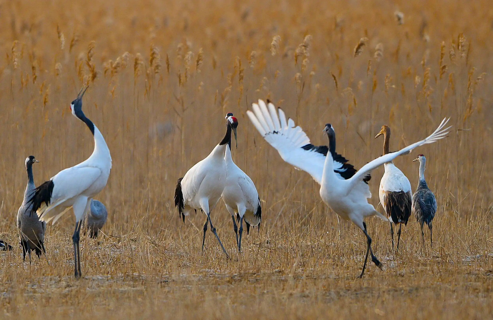
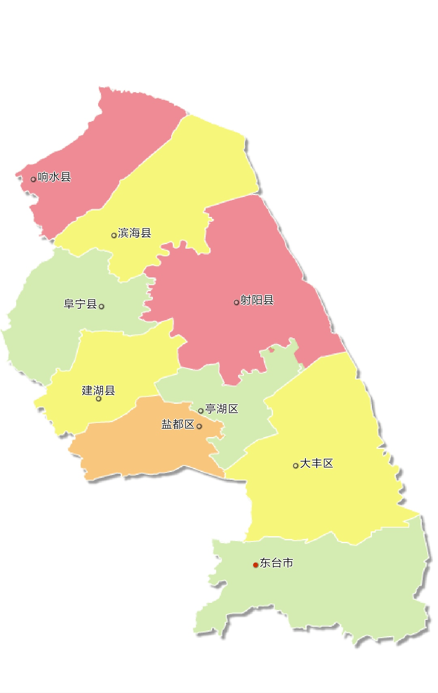

盐城市，江苏省辖地级市，Ⅱ型大城市 ，长江三角洲中心区城市， 地处中国东部沿海地区，江苏东部，东临黄海，南与南通接壤，西南与扬州、泰州为邻，西北与淮安相连，北隔灌河和连云港相望。 盐城全市土地总面积16931平方千米 ，其中沿海滩涂面积4553平方千米。盐城地处江苏省中东部的滨海平原和里下河平原，东临黄海，具体位于北纬32.85°～34.2°、东经119.57°～120.45°，南与南通市接壤，西南与扬州市、泰州市为邻，西与淮安市相连，北隔灌河和连云港市相望。 盐城地处北亚热带北部，属亚热带季风气候。年平均气温15.1℃，年平均无霜期约220天，年平均降水量1004.3毫米。以“东方湿地、水绿盐城”而闻名。
盐城市市域全境为平原地貌，西北部和东南部高，中部和东北部低洼，大部分地区海拔不足5米，最大相对高度不足8米。全境分为3个平原区：黄淮平原区、里下河平原区和滨海平原区。黄淮平原区位于苏北灌溉总渠以北，其地势大致以废黄河为中轴，向东北、东南逐步低落。
废黄河海拔最高处8.5米，东南侧的射阳河沿岸最低处仅1米左右。里下河平原区位于苏北灌溉总渠以南，串场河以西，属里下河平原的一部分，总面积4000余平方千米，该平原区四周高、中间低，海拔最低处仅0.7米。
滨海平原区位于灌溉总渠以南，串场河以东，总面积为7000余平方千米，约占全市总面积的一半，该平原区大致从东南向西北缓缓倾斜。东台境内地势较高，一般海拔为4米~5米间，向北逐渐低落，到射阳河处为1米~1.5米。
盐城市境内河流众多水网密布经流量丰富大致以废黄河为界分为淮河水系和沂沭泗水系主要河流有苏北灌溉总渠、射阳河、黄沙港、新洋港、串场河、灌河等。本项目附近的河流主要有蟒蛇河、朱沥沟、团结河、中心河。蟒蛇河蟒蛇河是新洋港的分支也是里下河地区较大的排水河道之一。该河西起大纵湖沿途汇入朱沥沟、盐河、西冈河、冈沟河、东沟河后流经龙冈等地至盐城西九里窑入新洋港。
盐城市属于北亚热带气候向南暖温带气候过渡的地带。一般以灌溉总渠为界,渠南为北亚热带气候带,渠北为南暖温带气候带。由于东临黄海,海洋调节作用非常明显,也可属于湿润的季风气候区。 主要特点是:季风盛行,四季分明,雨水丰沛,雨热同季,日照充足,无霜期长。这种气候,既有利于稻、麦、棉的生长,又有利于大豆、油菜、花生等油料作物以及蔬菜和果树的种植也有利于鱼、蟹、对虾、贝类等水产品的养殖。 盐城气候特点 盐城市是全国唯一没有山的城市。
盐城所在地域，周以前为淮夷地；九州划分时属青州，春秋时属吴，后属越。战国时属楚。秦代属东海郡；西汉初为射阳侯刘缠封地。西汉时期，盐城尚为位于海岸线上的海港，以煎炼海水得盐为主要产业，从而得名。 汉武帝元狩四年（前119年），建盐渎县，这是盐城置县的开端，孙坚曾任盐渎县丞。三国时属魏，废县制；西晋又复县制；东晋义熙七年（411年）改名盐城，此为现名之始；南北朝称盐城郡；隋初仍为县，属江都郡；隋末，韦彻据盐称王，分为新安、安乐两县，唐初复置盐城县；宋代属楚州。 今天地级盐城市辖区在相当长的近代史时期（直至1949-1950年盐城专区成形）内分属不同的二级行政区，如清代分属淮安府和扬州府，市区则分属淮安府盐城县和扬州府东台县（或泰州兴化县）。盐城市区的核心地区（昔盐城县）在元朝属淮安路；明代属南直隶淮安府；清初属江南省淮安府，康熙六年（1667年），江苏、安徽分省后属于江苏省淮安府。民国初，盐城县隶属江苏省淮扬道。 国民政府时期，盐城县为江苏省第六行政督察区首县，督察区下辖东台县，兴化县，阜宁县。抗日战争后期，新四军渡江北上，军部设于盐城，控制附近盐城、阜宁一带，析东台县北部设台北县、析盐城县东部设盐东县、析阜宁县东部设阜东县、析盐城县北部设建阳县4县。1946年盐城县改名为叶挺县，城区设叶挺市，1949年撤销叶挺市，叶挺县建制，恢复盐城县原名。另外台北县因与台湾省台北县（今新北市）重名，改名大丰县；建阳县与福建省建阳县重名，改名建湖县；盐东县与阜东县调整为射阳县与滨海县。 盐城地区其它县的设置：阜宁县系清朝雍正九年（1731年）析自淮安府山阳县；东台县系乾隆三十三年（1768年）析自扬州府泰州；1966年新建响水县。1983年撤销盐城县，设立盐城市，下辖城区、郊区2区和响水、滨海、阜宁、射阳、建湖、大丰、东台7县。1987年，东台设县级市、1996年，大丰设县级市，1996年，撤销郊区，建盐都县。2004年城区更名为亭湖区，撤销盐都县，设立盐都区，原盐都县伍佑镇，步凤镇，便仓镇划归亭湖区。2015年7月，大丰撤市设区，设立盐城市大丰区。
盐城市地处苏北盆地东部，东台坳陷和盐阜坳陷是地热、矿 泉水和油气资源的主要分布区。第四纪冲海积相地层遍布全市， 形成了丰富的砖瓦用粘土资源。截至 2020 年底，除油气外，全 市共发现矿产 8 种，包括地热、矿泉水、砖瓦用粘土、铁矿、建 筑用砂、保温材料用粘土、泥炭和煤。 盐城市矿产资源特点是种类少、小型矿床多。市域内地热、 矿泉水、砖瓦用粘土资源丰富，其它矿产贫乏，缺少大宗支柱性 矿产。地热、矿泉水资源找矿潜力较大，其中地热资源分布范围 广，存在多种类型的地热储层，埋藏深度适中，成矿条件好。
江苏盐城保护区主要保护的动物是:丹顶鹤 保护区重点保护对象是以丹顶鹤为代表的湿地珍稀野生动物及其赖以生存的滨海湿地生态系统。保护区有国家一级重点保护动物38种(鸟类27种),包括丹顶鹤、白头鹤、白鹤、东方白鹳、黑鹳、中华秋沙鸭、麋鹿等,国家二级重点保护动物90种(鸟类73种),支撑了17种世界自然保护联盟红色名录物种的生存。
盐城国家级自然保护区是珍禽丹顶鹤等水鸟的重要越冬地和候鸟的重要驿站，丹顶鹤越冬数量多达600只左右，是我国最大的丹顶鹤越冬地。其他珍贵、濒危鸟类还有国家I级保护动物白鹳、黑鹳、金雕、白肩雕、白尾海雕、丹顶鹤、白鹤、白头鹤、大鸨、遗鸥；国家II级保护动物黑脸琵鹭、灰鹤、小青脚鹬等67种。 在湖塘区有丰富的沉水及浮水植物，眼子菜、狐尾藻为主，以及水车前、野菱和芡等。滩涂上大片的芦苇和苔草沼泽群落以扁杆藨草、藨草和糙叶苔草为主。盐沼群落以盐蒿为主。新淤积的区域首先长有獐茅。海塘中的草地以白茅为主。人工林主要为刺槐等组成。 [2] 主要生境包括从通吕运河口到新沂河口300公里的永久性海滩、淡水到微咸水水塘、沼泽地、沼泽草地、大片芦苇和潮间泥滩，并有许多河道、潮湾和一些鱼塘、养虾池和盐场。由于南面长江三角洲泥沙的沉积，泥滩以每年100-200米的速度向外扩展，海岸则不断被围塘开垦为农田。
全市境内河流众多，水网密布，河渠纵横，四通八达。通榆河、串场河、灌河、废黄河、淮河入海水道、苏北灌溉总渠、射阳河、黄沙港、新洋港、斗龙港、等“两纵九横”骨干河道贯穿全境。根据流域水系划分，废黄河以北属沂沭泗水系，废黄河及其以南属淮河水系。
盐城市下辖东台1个县级市和建湖、射阳、阜宁、滨海、响水5个县,以及盐都、亭湖、大丰3个区,另设有盐城经济技术开发区和盐南高新技术产业开发区
